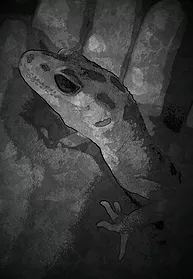

Всё начиналось как обычно происходит в таких случаях. Сын в августе, контрабандой, привёз с дачи четырёх прытких ящериц и выпустил их в квартире. Троих мы благополучно отловили в сентябре и выпустили их в места обетованные, т.е. на природу, а четвёртая выползла только в октябре, когда уже начал выпадать снег, и выгонять на улицу невинную рептилию было уже не гуманно, поэтому я отправилась в ближайший зоомагазин для того, чтобы помочь прыткачу перезимовать, с тем, чтобы с наступлением тепла выпустить ящерку на природу. В зоомагазине оказался толковый консультант, который посоветовал отправить новосёла до весны в спячку предварительно откормив, и предложил обзавестись более простой в содержании и уходе ящеркой, протянув мне на ладони очаровательное улыбающееся существо с толстым мягко-упругим хвостиком. Существо улыбаясь заглянуло мне в глаза и влезло вместе с лапами и хвостом в душу. В тот раз мне удалось уйти из магазина без покупки, так как будучи наученной горьким опытом с прыткой ящерицей, я пошла изучать матчасть по содержанию и уходу за эублефаром, коим и оказался улыбчивый ящер. Через некоторое время у нас поселился первый самечик, потом ему купили самочку, потом вторую, потом пошло потомство, и появление всё новых и новых улыбающихся ящеров.
Процесс содержания и ухода оказался действительно несложным и достаточно увлекательным. Ящерки оказались не только симпатичными, но и достаточно социальными, спокойно сидели на руках и не проявляли никакой агрессии. Единственная трудность которая у меня возникла поначалу, было кормление насекомыми, которые мало чем отличались от вызывающих у меня чувство отвращения тараканов - сверчками. Но что поделаешь - питомцы хотели есть, а мне очень хотелось чтобы им было комфортно. Поэтому в первый раз я натянула резиновые перчатки до локтей и с содроганием ловила удирающих от меня в садке для насекомых сверчков. Поймать пальцами в перчатках юрких сверчков без соответствующего навыка, занятие достаточно увлекательное и непростое, поэтому в первый раз я потратила на ловлю пяти сверчков около часа.. в следующий раз я уже не стала надевать сковывающие движения перчатки, что значительно ускорило процесс ловли, а затем обзавелась пинцетом, которым ловить насекомых и давать их ящеркам оказалось проще всего
Итак, вы решили приобрести эублефара. Сразу же нужно учесть, что рептилии несколько отличаются в содержании от теплокровных, так как для них жизненно важны некоторые моменты, в частности обогрев, рептилии принимают температуру окружающей среды и, в отличие от млекопитающих, они полностью зависят от хозяина, так как постоянно находятся в замкнутом пространстве и не могут покинуть это пространство чтобы добыть себе пищу и найти подходящие условия обитания. Тем не менее, условия содержания эублефаров наиболее простые по сравнению с другими видами рептилий.
Террариум.
Для содержания эублефара прежде всего необходим террариум. Его функции, в зависимости от материальных возможностей и наличия площадей для его размещения, могут выполнять как пластиковый контейнер, так и различные виды стеклянных террариумов, главным условием для которых является наличие нижней и верхней вентиляции, которые обеспечивают проток воздуха у нижней поверхности. Эублефары - наземные рептилии, обитающие в каменистых пустынях Ирана, Ирака, Афганистана, Пакистана и западной Индии, охотятся в сумерках и ночью, преимущественно между камнями. Основным видом пищи являются насекомые и мелкие грызуны, могут поедать более мелких себеподобных особей. Соответственно и создавать условия в террариуме следует приближённые к природным. Для комфортного проживания одной особи необходим террариум или контейнер площадью от 30х30 см и более, высота ёмкости особого значения не имеет, может быть вполне достаточно 15-20 см в высоту. Террариум или контейнер должен иметь проточную вентиляцию, объём которой должен составлять не менее 1/5 части крышки и боковой стенки. Также жизненно необходимым является наличие нижнего обогрева - под нижней стенкой террариума должен быть прикеплён специальный греющий коврик или шнур, которые можно приобрести в специализированных магазинах или смастерить самому. Жилище геккона должно быть оборудовано укрытием, поилкой, влажной камерой и плошкой с кальцием, который, как и вода, должен быть в постоянном доступе.
Нижний обогрев.
Нижний обогрев. В террариуме должен быть обеспечен градиент (перепад) температур от 30-32 градусов в тёплом углу до 23-24 градусов в холодном. Площадь обогреваемой поверхности должна составлять примерно одну треть от общей площади.
Укрытие.
Укрытие. Вариантов может быть великое множество: от пластиковых контейнеров из-под фаст-фуда, до керамических укрытий производимых компаниями, специализирующимися на товарах для содержания рептилий различных ценовых категорий. По наблюдениям, эублефары предпочитают тесные шершавые укрытия по которым можно лазить, например, пустая распиленная кокосовая скорлупа с проделанными в ней отверстиями-входами. Необходимо учитывать, что укрытие может перевернуться и травмировать питомца, поэтому при выборе следует обратить внимание на то, чтобы этого не произошло или эублефар не получил травм. Устанавливается укрытие в зависимости от предпочтений вашего геккона, в результате наблюдений: где он предпочитает проводить время. Укрытий может быть несколько или это может быть одно большое, покрывающее большую площадь поверхности.
Влажная камера.
Влажная камера. Выполняет три функции. Так же как и змеи, эублефары периодически линяют, для облегчения этого процесса во влажную камеру кладётся влажный субстрат, которым может быть вермикулит, мох-сфагнум, влажные салфетки или целлюлозные полотенца, сложенные в несколько слоёв. Во время линьки отслаивающаяся шкурка отделяется, увлажняется и легче удаляется гекконом. Субстрат должен быть влажным, но не мокрым. Если это вермикулит или сфагнум, необходимо их намочить в воде, а затем выжать и уложить равномерно внутри контейнера. Влажность необходимо проверять каждый день, в случае подсыхания опрыскивать пульверизатором. Влажная камера также выполняет функцию места дополнительного охлаждения и, наконец, просто укрытия. Оборудовать влажную камеру можно из обычного пищевого контейнера, проделав отверстие сбоку или сверху, сверху предпочтительнее, так как некоторые эублефары любят копать, в том числе и субстрат в ВК, который, в последствии, оказывается на всей площади террариума. Устанавливается ВК, как правило, в холодном углу, для того чтобы не создавать эффекта бани и чтобы субстрат медленнее высыхал.
Поилка.
Поилка. Это может быть любая пластиковая, полимерная, керамическая стеклянная ёмкость, которую геккону трудно перевернуть и которая легко моется. Воду в поилке необходимо менять минимум раз в два дня. Во избежание быстрого испарения воды целесообразно устанавливать поилку в холодном углу.
Плошка с кальцием.
Плошка с кальцием. Это так же может быть любая небольшая ёмкость с насыпанным в неё специальным кальцием для рептилий, кальций в сочетании с витамином Д3, досыпается по мере употребления или загрязнения.
Грунт.
Грунт для террариума. В среде заводчиков и любителей нет единого мнения по поводу оптимального грунта для содержания эублефаров, тем не менее, большинство опытных владельцев отдают предпочтение целлюлозным салфеткам для молодняка от рождения и до полугода, далее пересаживая питомцев на песок, крупную гальку и полимерные покрытия. В этой связи часто возникают вопросы с возможностью заглатывания эублефарами грунта. К сожалению, исключить такую возможность нельзя ни при каком виде грунта - он заглатывается вместе с кормовыми объектами и целенаправленно, что, скорее, свидетельствует о нехватке определённых веществ в организме, корректируется сменой дозировки или марки витаминов или кальция. У гальки средней и крупной есть один заметный недостаток: эублефары - ночные рептилии, и грохот в ночи зачастую не радует их счастливых владельцев.:)
Использование целлюлозных салфеток помогает решить эту проблему. Также, на салфетках удобнее отслеживать состояние стула животного. Если у хозяина нет особых требований к эстетике при оформлении террариума, то можно довольствоваться салфетками и не переводить питомца на другой грунт.
В варианте с песком стоит отметить, что он должен быть мелкий, окатанный (без острых краев), просеянный и, желательно прокалённый. Но, даже при соблюдении этих условий, всегда стоит помнить, что песок несет в себе определенную опасность. Он может вызвать закупорку, хотя и из организма выводится проще чем другие виды грунта.
Это необходимый минимум для содержания эублефара. По желанию жилище питомца можно отдекорировать всевозможными корягами , ветками, которые необходимо предварительно выварить не менее 30 минут, искусственными растениями, которые продаются в специализированных зоомагазинах, скорлупой кокосовых орехов и т.д.
Размещение живых растений в террариуме не рекомендуется по нескольким причинам: эублефар может их съесть, что крайне нежелательно, за растениями сложнее ухаживать, и они часто становятся пищевым объектом для кормовых насекомых. Если наличие живых растений принципиально, следует выбирать не ядовитые виды простые в уходе, живущие на грунте находящемся в террариуме. В этом случае кормление питомца следует осуществлять с пинцета, либо в отсаднике. В противном случае, бегающие сверчки обязательно поселятся в горшке с растением, съедят листву и корни, отложат в землю яйца и пророют там ходы.
Эублефары – насекомоядные рептилии, изредка питающиеся мелкими позвоночными млекопитающими и рептилиями. Никакие другие виды пищи для эублефаров непригодны. В домашних условиях основной рацион должен состоять из сверчков или тараканов, для взрослых особей, и, по мере возможности, следует обеспечить разнообразие в виде различных гусениц, личинок и мышат-голышей. Также рацион и частота кормления зависит от возраста и состояния геккона. Взрослых следует кормить не чаще 2-х раз в неделю, лучше 3 раза в 2 недели, новорождённых кормят каждый день сверчками или тараканами каждый день, после месяца увеличивая интервал между кормлениями.
В природе эублефары получают все необходимые вещества из кормовых объектов (КО), но поскольку в домашних условиях для кормления используются насекомые выращенные на специальных фермах, прежде чем скармливать, необходимо накормить насекомых, как минимум за 2,5 часа до кормления. Насекомые с пустым желудком практически не имеют пищевой ценности, поэтому у базовых насекомых должен быть корм в виде отрубей, геркулеса, сухой дани или гаммаруса и влагосодержащих фруктов или овощей – яблок, моркови или салатов. Кроме того, отсутствие сухого и влажного корма могут вызвать у насекомых каннибализм.
Прежде чем скармливать корм, его следует посыпать или обвалять в смеси кальция и витамина Д3, реже, примерно на каждое четвёртое кормление, обмакнуть в специальные мультивитамины для рептилий.
Из имеющихся в продаже витаминов следует отметить кальций и мультивитамины Зоомед, на данный момент они считаются лучшими. Также продаются составы JBL MicroCalcium и TerraVit и Tetra: ReptoCal и ReptoLife, которые также пригодны к использованию, но в разных пропорциях.